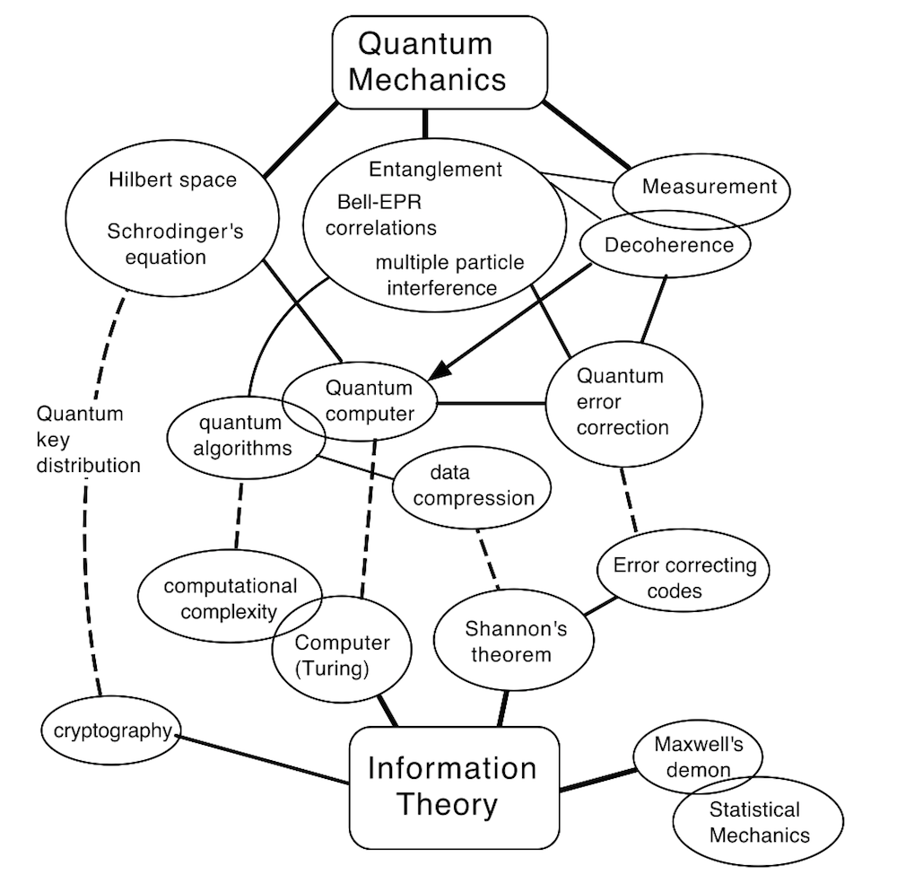

While it is true that to make any predictions of quantum computing would result in vacuous assumptions, as the full technological capabilities have yet to be understood; many experts within the field have agreed on some of the benefits quantum computing would bring to the society as a whole due to its discrete optimization, let alone the positive feedback effect generated by the engineering advances enabling for such a technology to be possible within the realm of reality.

• Calculations done in parallel, analogous to multi core but taking advantage to the superposition of states.
• Solve the “Traveling Salesman” problem for reaching > 28 cities because of a computer lagging in solving so many algorithms.
• For n turing bits, qubits offer 2n the equivalent computational power (with 30 qubits it would be more powerful than the most powerful computer and for 300 qubits more than the aggregate of all computers in existence).
• Data encryption/security, Shor’s algorithm for the P vs. NP problem (minutes instead of year’s worth of processing for factoring large numbers ~ 1024 bit number).
• Chemical and protein modelling due the quantum interaction of atoms and the quantum architecture of the systems.
• Modelling of complex multi parameter systems, such as climate, finance and many others.
• By 2018, NASA will have found a planet with oceans of liquid water and Earth-like atmosphere within 40 light years of Earth using a quantum computer.
• By 2023, a major breakthrough in physics will occur based on a model whose cornerstone is the reality of parallel universes; an experiment will be performed on quantum computer that will support the new theory.
• By 2028, intelligent machines will exist that can do anything humans can do; quantum computers will have played a critical role in the creation of this new type of intelligence.
• Due to its quantum nature, quantum computers will help understand the complex universe of quantum physics and shed the light the explanation of how Ammonia derives from Nitrogen, Materials Science, Climate Change and the pharmaceutics industry.
The points written below have been directly extracted from the D-Wave information centre.
• Optimization: finding the best combination of parameters for yielding a better end result.
• Radiotherapy Optimization: quantum computing would allow for a faster convergence of radiation beams to minimise the collateral damage to the surrounding tissue.
• Protein Folding: understanding the process of protein folding could lead to radical transformation of our understanding of complex biological systems and improve our ability to design better and more powerful drugs.
• Water Network Optimization: the quantum computer gives us a tool for designing the optimal network, by penalizing undesirable outcomes in the network such as low pressure or the presence of chemical contaminant levels, while rewarding desirable outcomes such as low cost, low risk, safety, etc. This Quantum-Classical hybrid solution quickly hones in on good solutions by asking the conventional system to evaluate far fewer possibilities.
• Machine Learning and Categorization of Large Amounts of Data: because of its unparalleled processing capacity, quantum computing would result useful processing huge amounts of data and achieving what is known as machine learning.
• Object Detection: together with researchers at Google, D-Wave has built software for determining whether or not there is a car in an image using a binary classification algorithm run in hardware. In excess of 500,000 discrete optimization problems were solved during the learning phase, with Google developers accessing the D-Wave system remotely.
• Video Compression: using unsupervised machine learning approaches, one can automate the discovery of a very sparse way to represent objects. This technique can be used for incredibly efficient compression. The algorithm works by finding a concise representation of the objects being fed into the computer.
• Monte Carlo Simulation: better modeling of stochastic processes and chaotic systems.